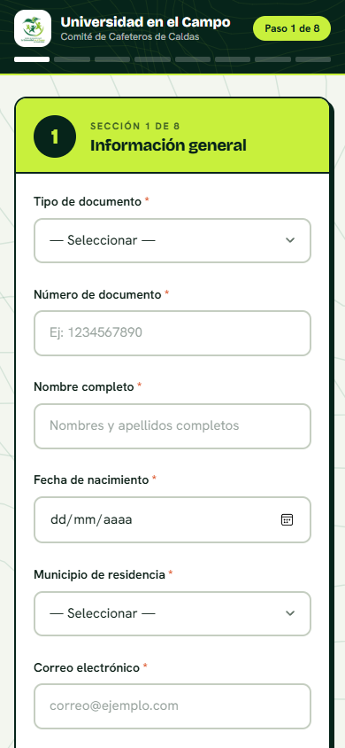
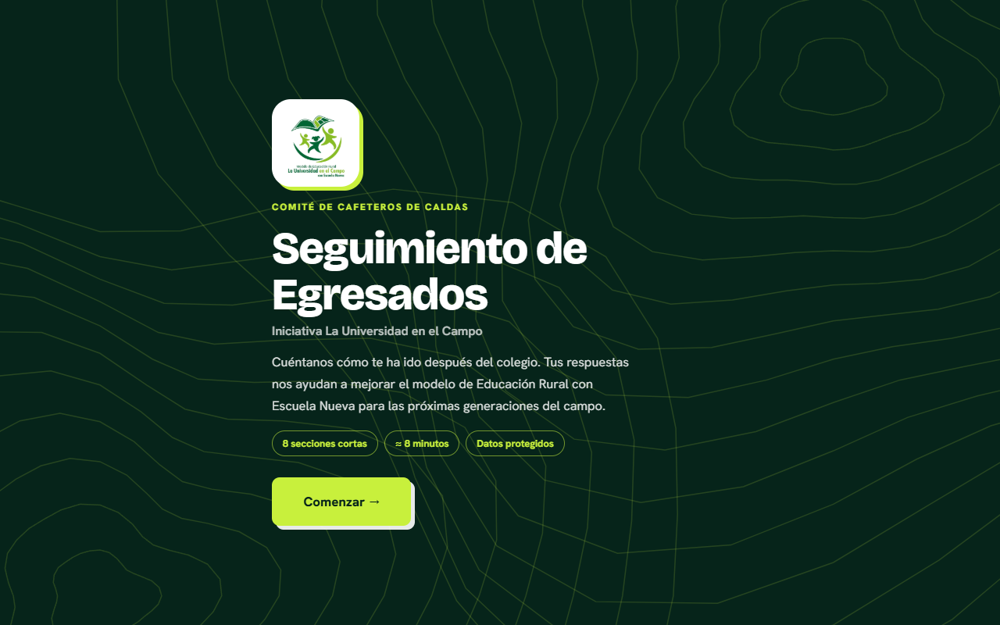
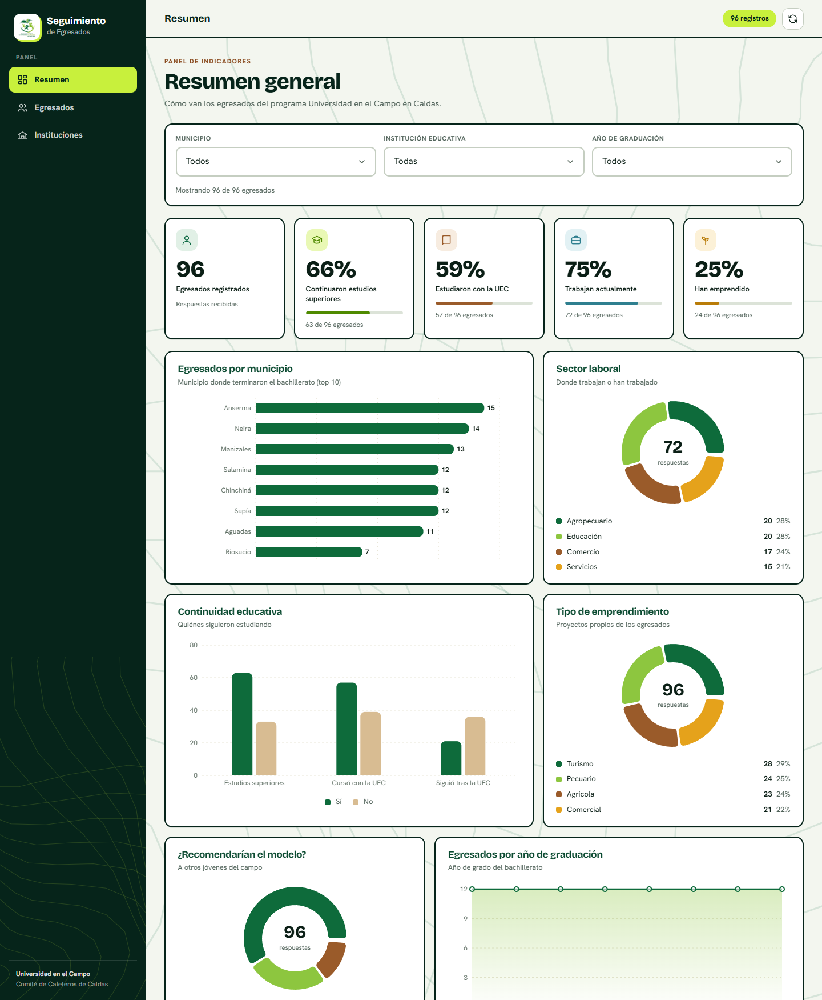
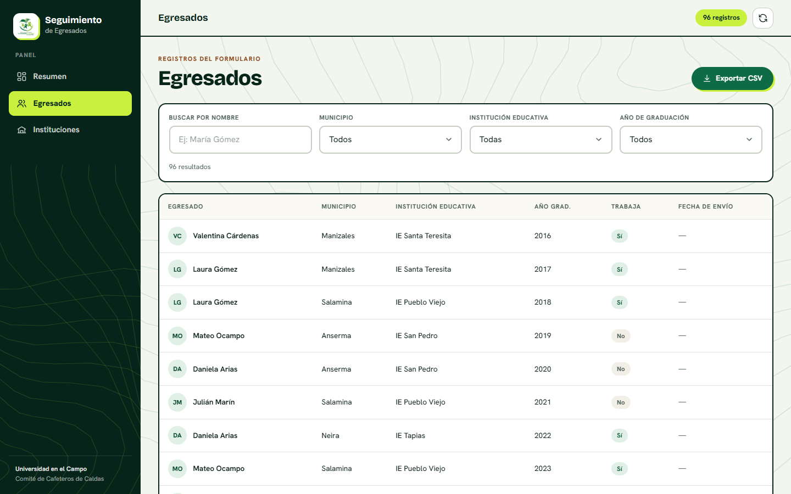
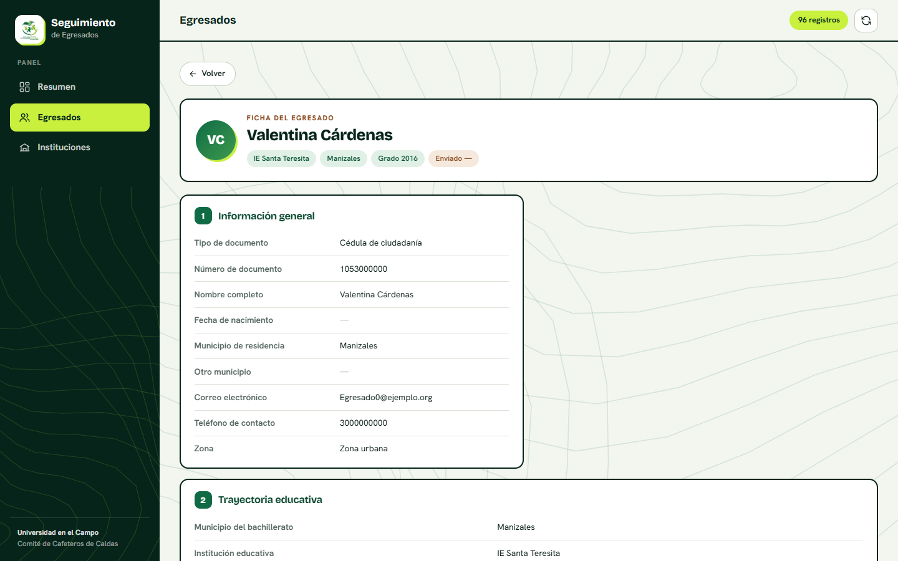
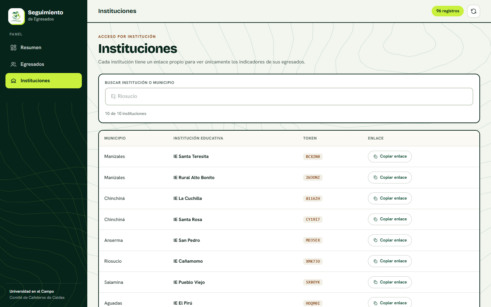
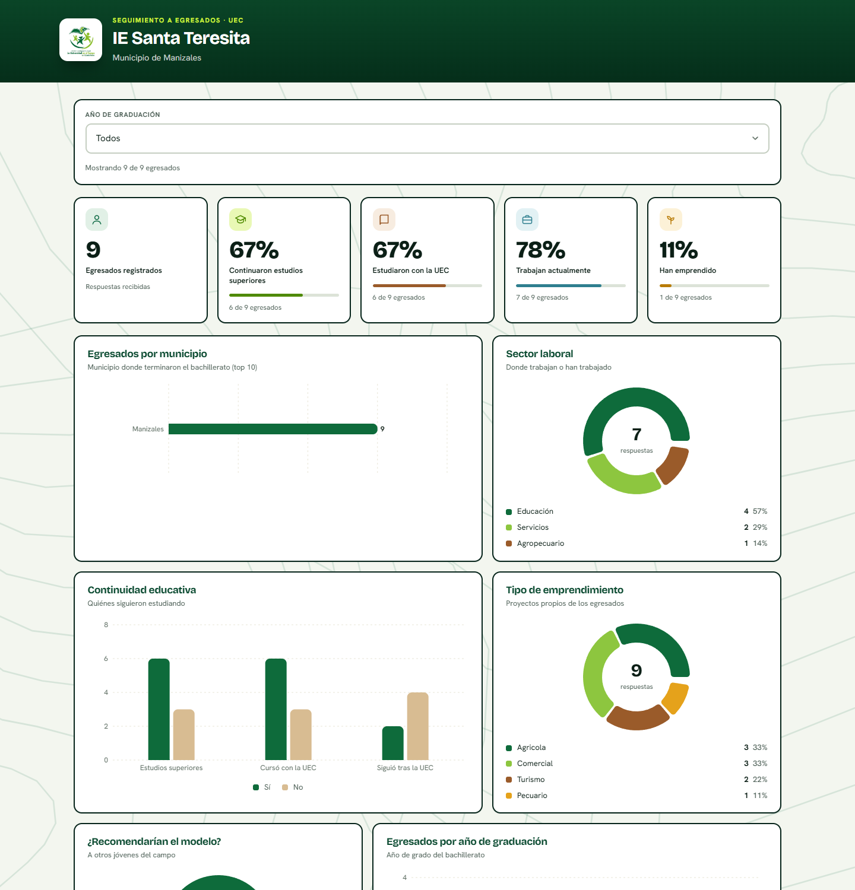
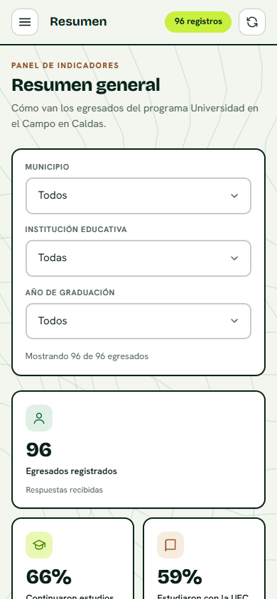

Comité de Cafeteros de Caldas · La Universidad en el Campo
Una herramienta para que cada egresado cuente cómo le ha ido después del colegio, y para que el programa conozca, con datos reales, qué está funcionando y qué se puede mejorar. Esta guía explica para qué sirve y cómo usarla paso a paso.
Todo en un lugar
Estas son las direcciones que necesita cada persona. Guárdalas o compártelas según su rol.
| Recurso | Enlace | Quién lo usa |
|---|---|---|
| Cuestionario para egresados | https://alianzaeducacionrural.github.io/seguimiento-egresados/ | Egresados |
| Panel de la coordinación | https://alianzaeducacionrural.github.io/seguimiento-egresados/admin | Coordinación del programa |
El propósito
El programa La Universidad en el Campo forma a jóvenes del campo caldense. Esta herramienta existe para saber qué pasó con ellos después: si siguieron estudiando, si trabajan, si emprendieron y qué opinan de lo que vivieron en el colegio.
Un cuestionario corto y amable que se adapta al celular. Si una pregunta no aplica a tu caso, simplemente no aparece.
Un panel con indicadores, gráficas con filtros, listado de egresados, fichas individuales y descarga de reportes.
Un enlace propio que muestra solo a los egresados de su colegio. No necesita usuario ni contraseña.
Para egresados
Responder toma unos 8 minutos. No necesitas crear cuenta ni descargar nada.


Aquí un resumen. Todas las preguntas, una por una, están en la sección Las preguntas.
| # | Sección | Qué te preguntamos |
|---|---|---|
| 1 | Información general | Documento, nombre, fecha de nacimiento, municipio, contacto y zona |
| 2 | Trayectoria educativa | Tu colegio, si seguiste estudiando y si cursaste algo con la UEC |
| 3 | Situación laboral | Si trabajas, en qué sector y si tu empleo se relaciona con lo que estudiaste |
| 4 | Emprendimiento | Si has emprendido, el tipo de proyecto y si usaste el Fondo Rotatorio |
| 5 | Proyectos pedagógicos | Cómo viviste los proyectos pedagógicos productivos en el colegio |
| 6 | Impacto social | Cómo ha influido tu formación en tu familia y tu comunidad |
| 7 | Retroalimentación | Qué estrategias te sirvieron y qué mejorarías |
| 8 | Contacto y autorización | Cómo localizarte y tu autorización de datos (Ley 1581 de 2012) |
Revisa tu conexión a internet y toca Reintentar. Si tarda demasiado, verás un aviso y podrás intentar de nuevo.
Espera unos segundos: el botón dice "Enviando…". Si aparece un mensaje, léelo. Si dice que tardó demasiado, avisa al equipo antes de enviar de nuevo para no duplicar tu respuesta.
No: el formulario no guarda borradores. Si cierras la página tendrás que empezar de nuevo.
El equipo del programa en el Comité de Cafeteros de Caldas y, de forma resumida, tu institución educativa. Los usamos solo para mejorar el programa, según tu autorización en la sección 8.
El cuestionario completo
Estas son las preguntas que verá cada egresado, sección por sección (49 en total). No todas aparecen para todos: algunas solo se muestran según tus respuestas anteriores. Las opciones de respuesta se ven al abrir cada pregunta en el cuestionario.
| Pregunta | Cómo se responde | Cuándo aparece |
|---|---|---|
| Tipo de documento | Lista desplegable | Siempre |
| Número de documento | Texto corto | Siempre |
| Nombre completo | Texto corto | Siempre |
| Fecha de nacimiento | Fecha | Siempre |
| Municipio de residencia | Lista desplegable | Siempre |
| ¿Cuál municipio? | Texto corto | Si eliges "Otro municipio" |
| Correo electrónico | Texto corto | Siempre |
| Teléfono de contacto | Texto corto | Siempre |
| ¿Resides en zona rural o urbana? | Una opción | Siempre |
| Pregunta | Cómo se responde | Cuándo aparece |
|---|---|---|
| Municipio donde terminaste el bachillerato | Lista desplegable | Siempre |
| Institución educativa donde te graduaste | Lista desplegable | Siempre (la lista depende del municipio) |
| Año de graduación de bachillerato | Lista desplegable | Siempre |
| ¿Continuaste con estudios superiores después del bachillerato? | Sí / No | Siempre |
| ¿Cuál fue la razón principal para no continuar? | Varias opciones | Si respondes que no |
| ¿Cursaste estudios con La Universidad en el Campo (UEC)? | Sí / No | Siempre |
| Nivel que cursaste | Varias opciones | Si cursaste con la UEC |
| Institución donde cursaste el programa UEC | Texto corto | Si cursaste con la UEC |
| Nombre del programa | Texto corto | Si cursaste con la UEC |
| Universidad que avaló el programa | Lista desplegable | Si cursaste con la UEC |
| Año de graduación UEC | Lista desplegable | Si cursaste con la UEC |
| ¿Continuaste estudios después de graduarte del UEC? | Sí / No | Si cursaste con la UEC |
| Nivel de estudios posteriores | Una opción | Si continuaste estudiando tras la UEC |
| Nombre de la institución | Texto corto | Si continuaste estudiando tras la UEC |
| Programa o carrera | Texto corto | Si continuaste estudiando tras la UEC |
| ¿Por qué no continuaste estudios después del UEC? | Varias opciones | Si no continuaste tras la UEC |
| Pregunta | Cómo se responde | Cuándo aparece |
|---|---|---|
| ¿Actualmente trabajas? | Una opción | Siempre |
| ¿Has trabajado desde que egresaste? | Sí / No | Siempre |
| ¿Obtuviste tu empleo a través de la Línea de Inserción Laboral? | Sí / No | Si trabajas o has trabajado |
| ¿Tu empleo está relacionado con tu formación? | Sí / No | Si trabajas o has trabajado |
| Sector en el que trabajas o trabajaste | Varias opciones | Si trabajas o has trabajado |
| Tipo de contrato en tu empleo más reciente | Una opción | Si trabajas o has trabajado |
| ¿Tu formación en Escuela Nueva contribuyó a obtener tu trabajo? | Sí / No / En parte | Si trabajas o has trabajado |
| Pregunta | Cómo se responde | Cuándo aparece |
|---|---|---|
| ¿Has emprendido un negocio o proyecto propio? | Sí / No | Siempre |
| Tipo de emprendimiento | Varias opciones | Si has emprendido |
| ¿Accediste al Fondo Rotatorio? | Sí / No | Siempre |
| ¿Fuiste beneficiario de la Línea de Empresarismo? | Sí / No | Siempre |
| ¿Escuela Nueva te ayudó a desarrollar habilidades para emprender? | Sí / No | Siempre |
| Pregunta | Cómo se responde | Cuándo aparece |
|---|---|---|
| ¿Implementaste algún Proyecto Pedagógico Productivo Sustentable (PPPS)? | Sí / No | Siempre |
| ¿En qué área implementaste el PPPS? | Varias opciones | Si implementaste uno |
| ¿Sigues aplicando esos conocimientos actualmente? | Sí / No | Si implementaste uno |
| Pregunta | Cómo se responde | Cuándo aparece |
|---|---|---|
| ¿Te consideras parte del empalme generacional del campo colombiano? | Sí / No | Siempre |
| ¿Por qué te consideras parte del empalme generacional? | Varias opciones | Si respondes que sí |
| Pregunta | Cómo se responde | Cuándo aparece |
|---|---|---|
| ¿Qué estrategias de Escuela Nueva han contribuido más a tu desarrollo? | Varias opciones | Siempre |
| ¿Qué aspectos del programa deberían mejorarse? | Respuesta abierta | Siempre |
| ¿Recomendarías el modelo de Escuela Nueva a otros jóvenes? | Una opción | Siempre |
| ¿Hay algo más que quisieras compartir con nosotros? | Respuesta abierta | Siempre |
| Pregunta | Cómo se responde | Cuándo aparece |
|---|---|---|
| Teléfono de contacto adicional (opcional) | Texto corto | Siempre |
| Correo electrónico adicional (opcional) | Texto corto | Siempre |
| Autorización para el tratamiento de tus datos personales (Ley 1581 de 2012) | Casilla de aceptación | Siempre — es obligatoria para poder enviar |
Para la coordinación
El panel está en https://alianzaeducacionrural.github.io/seguimiento-egresados/admin. Funciona en computador y en celular.
Abre el enlace del panel y listo: no necesitas usuario ni contraseña. Usa el menú de la izquierda para moverte entre Resumen, Egresados e Instituciones.
Muestra 5 indicadores (egresados, estudios superiores, UEC, empleo, emprendimiento) y 7 gráficas.



Cada sección del formulario aparece como un bloque. Los campos sin respuesta muestran una raya (—). Usa Volver para regresar a la tabla.

Lo que recibe cada institución: un panel reducido, sin menú, solo con sus egresados. Cada institución tiene su propio enlace.

| Qué pasa | Qué hacer |
|---|---|
| Aparece "No se pudo conectar" | Revisa tu conexión a internet y toca el botón de actualizar. |
| El enlace de una institución muestra un aviso de enlace no válido | Vuelve a copiar el enlace desde Instituciones en el panel. |
| No aparece una institución en el cuestionario | Avisa a la coordinación para que la agreguen. |
| Un egresado dice que ya envió y no lo ves | Toca el botón de actualizar y busca su nombre en Egresados. |
El menú lateral se vuelve un botón (☰) y las tarjetas se apilan. Todas las funciones están disponibles.
